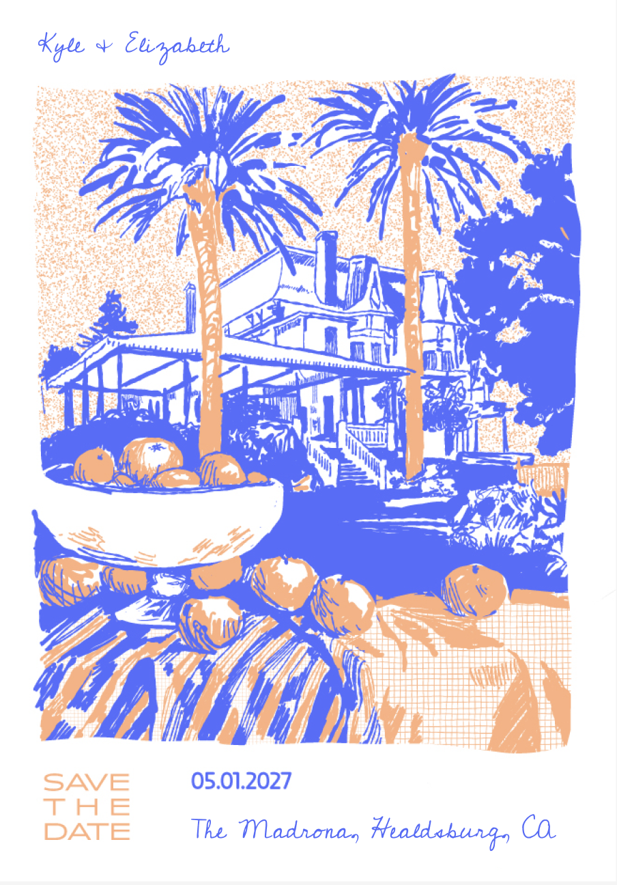

Turn 1 — opening experience, four worldsmove your cursor inside each one. they are live.
1AMisregistration — two plates, one hand

KYLE
KYLE
and
Elizabeth
Two plates, printed slightly out of register — the orange never quite lands on the blue. The site is a press that never fully behaves.
05.01.2027
The Madrona, Healdsburg
The weekendTravelRSVP
1BStill life, loose — click the table
come have a drink
Flat plates of ink, one crooked line, fruit that refuses to sit still. Every click resets the table — the composition is never twice the same.
Kyle & Elizabeth
05.01.2027 · The Madrona
Healdsburg, California
1CRegisters — one world, six atmospheres
Kyle & Elizabeth · 05.01.2027
{{ reg.when }}
{{ reg.title }}
{{ reg.note }}
{{ r.short }}
Hover the six moments. Type, color, density and image all change register — the DNA does not.
1DIkebana — the page leans toward you
Fig. 1 — the arrangement
Kyle
&
Elizabeth
Mostly empty. Three things placed with intent, at three different weights, holding the space between them. Nothing is centered; everything is balanced.